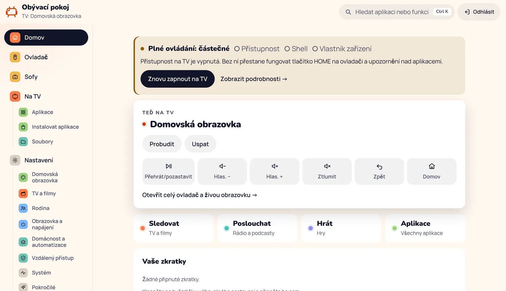
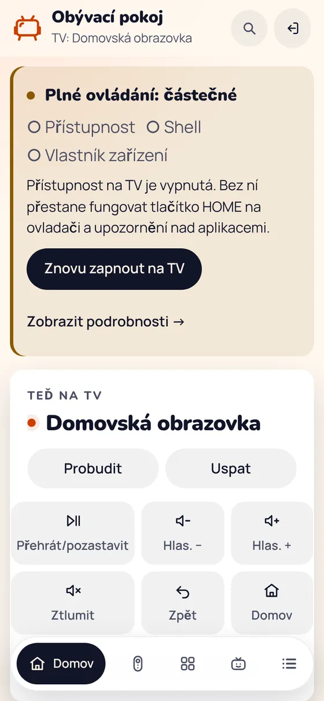

Vaše TV, zase jednoduchá. Vše na svém místě, jako v uklizeném obýváku.
Pro ty, kdo si chtějí jen lehnout na gauč a dívat se na televizi. Sofaly nahrazuje domovskou obrazovku, ne vaši TV: Google tu zůstává, reklamy ne a vše je na jednom místě.
Jeden kříž, pět světů
Pokračovat, Sledovat, Poslouchat, Hrát a Aplikace. Ke všemu dvěma kliknutími.
Vůbec žádné reklamy
Ani v bezplatném tarifu, ani jedno sponzorované místo. Žádné sledování neopouští váš domov.
Rychlá i na základní TV
Měřeno na 32bitovém Chromecastu: animace se přizpůsobí tomu, co zařízení zvládne.
Pro celou domácnost
I pro babičku a dědu
Velké písmo, jednoduchý režim, který vysloví název aplikace, vysoký kontrast a čtečka obrazovky. V 27 jazycích.
Vstává s vámi
Budík sám zapne TV, pomalu zesílí a otevře Dobré ráno: čas, počasí a program dne.
Stará se o domácnost
Světla, scény a zvonek z Home Assistantu na TV. Usne, když všichni odejdou.
Mluví s vaším telefonem
Ovládejte, pište a posílejte zprávy z jakéhokoli telefonu nebo počítače doma, chráněno PIN.
Počasí, které sedí
Aktuální počasí pochází z nejbližšího letiště: naměřené, ne odhadnuté. Předpověď na 9 dní jedním OK.
Stará se sama o sebe
Každou noc zamčená záloha, údržba, zatímco spíte, a diagnostika, která vysvětlí, co se pokazilo.
Vaše TV i v telefonu a počítači.
Otevřete prohlížeč ve stejné síti, zadejte PIN a jste uvnitř: ovladač, psaní s diakritikou, obrazovka TV živě, poznámky a nastavení. Nic k instalaci a žádný účet.


- Panel v telefonu a počítačiOvladač, psaní s diakritikou, živý náhled obrazovky TV, fotky spořiče, nástěnka a zálohy z prohlížeče jakéhokoli zařízení doma.
- Zeptejte se TVNapište nebo řekněte „otevři YouTube“, „připomeň mi za 7 minut“, „vypni se za 30 minut“ a TV to udělá.
- Sdílení z telefonuPanel nainstalovaný jako aplikace se objeví ve Sdílet: video z YouTube se otevře na TV, odkaz se otevře na TV a z textu se stane zpráva.
- Zkratka ve WindowsTV se objeví v Síti v Průzkumníku se zkratkou, která otevře panel, i když se změní její IP.
- TV jako síťový diskKopírujte soubory do TV přetažením: ve Windows se objeví v Tento počítač jako telefon; na Macu, Linuxu a telefonech přes zabezpečený WebDAV.
- Více domácnostíStarejte se o TV u vás i u rodičů ze stejného telefonu.
Skutečné obrazovky panelu s ukázkovými daty.
120 nových věcí, které vaše TV umí. Uspořádáno do 12 světů, stejně jako kříž uspořádává obrazovku.
- KřížPřehledná obrazovka, které rozumí každý, uspořádaná podle vás.19
- SledovatVaše filmy, seriály a přehrávač jako v domácím kině.14
- PoslouchatRádio a podcasty se stejnou péčí jako video.5
- HrátVšechny vaše hry na jednom místě, připravené na ovladač.6
- AplikaceVaše aplikace v pořadí, které dává smysl.3
- DomácnostBudík, časovače, automatizace a chytrá domácnost.13
- Počasí a spořič obrazovkySprávné počasí a spořič, který stojí za to nechat běžet.13
- RodinaProfil pro každého, péče o děti a vřelé přivítání pro hosty.12
- Telefon a počítačTV mluví se zařízeními v domácnosti.11
- Stará se sama o sebeZálohy, údržba a diagnostika, aniž byste na to museli myslet.13
- Pro každéhoPro lidi, kteří vidí, slyší nebo používají ovladač různými způsoby.5
- SoukromíŽádné reklamy, žádné sledování a PIN tam, kde na tom záleží.6
Kříž
Přehledná obrazovka, které rozumí každý, uspořádaná podle vás.

Kříž
Pokračovat, Sledovat, Poslouchat, Hrát a Aplikace v jedné řadě. Vybraný svět se zvětší a jeho obsah je hned pod ním.
Pokračovat
Jedno místo, kde se vrátíte k tomu, co jste dělali: epizoda, stanice, podcast nebo poslední aplikace.
Horní lišta
Hledání, hlas, počasí na jednom řádku a hodiny, vždy na stejném místě. Při procházení se složí, aby obrazovka mohla dýchat.
Kříž
Pokračovat, Sledovat, Poslouchat, Hrát a Aplikace v jedné řadě. Vybraný svět se zvětší a jeho obsah je hned pod ním.
Kde: ◀ ▶ přepnout svět, ▲ ▼ procházet sloupec, OK otevře.Pokračovat
Jedno místo, kde se vrátíte k tomu, co jste dělali: epizoda, stanice, podcast nebo poslední aplikace.
Kde: Je to první položka kříže.Horní lišta
Hledání, hlas, počasí na jednom řádku a hodiny, vždy na stejném místě. Při procházení se složí, aby obrazovka mohla dýchat.
Kde: Dostanete se k ní pomocí ▲.Google funguje dál
Asistent Google, Gemini, vyhledávání a váš účet Google fungují jako dřív. Sofaly mění domovskou obrazovku, ne vaši TV.
Kde: Používejte tlačítko mikrofonu jako vždy.Rychlý panel
Wi-Fi, Bluetooth, časovač spánku, zvukový výstup, budík, profily, upozornění a nákupní seznam, z jakékoli aplikace.
Kde: Podržte BACK.Váš ovladač, vaše pravidla
HOME se vždy vrátí do Sofaly. Podržení BACK otevře rychlý panel, podržení HOME otevře Domácnost a podržení OK na aplikaci otevře její nabídku.
Kde: Tester kláves ukáže každé tlačítko, které TV přijme.Právě hraje
Pilulka nahoře s obalem a názvem toho, co hraje. OK pozastaví nebo obnoví přehrávání, podržení OK otevře aplikaci.
Kde: Zapněte v Domovská obrazovka › Další možnosti.Motivy a pozadí
Tmavý, s obrázkem toho, co je ve fokusu. Galerie, každý den s obrazem z The Met. Nebe, se satelitem a mapou. Nebo vlastní pozadí, fotka či video. Fungují i pozadí z pluginů, například letecké záběry z Overflight.
Kde: Tmavý, Galerie a Nebe v Basic; ostatní v Pro.Ikony podle vašeho gustaPro
Použijte balíček ikon z Play nebo změňte ikonu jednotlivé aplikace, jednu po druhé.
Kde: Podržte OK na aplikaci › Změnit ikonu.Animace na míru vaší TV
Výkonné TV animují vše; jednodušší animují jen to, co jste vybrali, a samy zpomalí, když ubývají snímky.
Kde: Nastavení › Vzhled.Fáze MěsícePro
Dnešní Měsíc a jak velká část je osvětlená, spočítané přímo na TV, bez internetu.
Kde: V předpovědi, na spořiči obrazovky a v noci na ikoně počasí. Nastavení › Vzhled.OdpočetPro
Kolik dní zbývá do zvoleného data nebo do dalšího svátku.
Kde: V pilulce nahoře na obrazovce. Nastavení › Vzhled.Domácí připomínkaPro
Poznámka, která se vrací ve vybrané dny v týdnu: den svozu tříděného odpadu, léky, kroužek.
Kde: V pilulce nahoře na obrazovce. Nastavení › Vzhled.Stav vaší službyPro
TV kontroluje zadanou adresu a ukazuje, jestli funguje: domácí server, web obchodu.
Kde: V pilulce nahoře na obrazovce. Nastavení › Vzhled.Dnešní kurzyPro
Měny, bitcoin a ether v dnešní hodnotě, z otevřených oficiálních zdrojů.
Kde: Vedle počasí v horní liště. Nastavení › Vzhled.Další zápas vašeho týmuPro
Kdy a s kým váš tým hraje příště, na kartě na domovské obrazovce.
Kde: V položce TV kříže. Nastavení › Vzhled.Karty z jiných aplikacíPro
Kromě vlastních karet Sofaly přidávají své karty na domovskou obrazovku i partnerské aplikace: doručovanou objednávku, autobus, oznámení od správy domu.
Kde: Karty se zobrazují na konci světa Sledovat.Ostrov nahoře na obrazovce
Upozornění se střídají v pilulce nahoře: bez internetu, připomínka, kalendář a budík. Co je důležité, se na 5 sekund zvětší s „▲ otevřít“, zvonek z Domova se zobrazí hned a když zapnete TV, objeví se shrnutí toho, co se stalo. Podržením ▲ nahoře na kříži otevřete Centrum.
Kde: Domovská obrazovka, nahoře.Správný návrh ve správnou chvíli
Bez umělé inteligence: z používání během týdne TV navrhne, co v danou hodinu dává smysl.
Kde: Domovská obrazovka.
Sledovat
Vaše filmy, seriály a přehrávač jako v domácím kině.

Z počítače
Videa, hudba a fotky z Plexu, Jellyfinu, Emby, složek na PC nebo NAS (SMB, WebDAV, FTP, SFTP, NFS), OneDrive, Dropboxu, Boxu, Google Drive, UPnP a USB disků.
Přehrávač, který přehraje všechno
Zvuk Dolby (AC3, E-AC3), DTS a TrueHD a titulky z Blu-ray, DVD a anime, bez instalace Kodi nebo VLC.
Pokračuje, kde jste skončili
Filmy a epizody se vrátí na správné místo. Další epizoda začne po 10 sekundách a po 3 v řadě se TV zeptá, jestli se ještě díváte.
Z počítače
Videa, hudba a fotky z Plexu, Jellyfinu, Emby, složek na PC nebo NAS (SMB, WebDAV, FTP, SFTP, NFS), OneDrive, Dropboxu, Boxu, Google Drive, UPnP a USB disků.
Kde: Zapnuté servery a USB disky se objeví samy; ostatní přidáte v Přidat.Přehrávač, který přehraje všechno
Zvuk Dolby (AC3, E-AC3), DTS a TrueHD a titulky z Blu-ray, DVD a anime, bez instalace Kodi nebo VLC.
Kde: Během videa stiskněte ▼: zvuk, titulky a velikost titulků.Pokračuje, kde jste skončili
Filmy a epizody se vrátí na správné místo. Další epizoda začne po 10 sekundách a po 3 v řadě se TV zeptá, jestli se ještě díváte.
Kde: Funguje samo.Přeskočit úvod
Když je úvod seriálu známý, objeví se „Přeskočit úvod · OK“. Úvod si také můžete jednou označit a TV si ho zapamatuje.
Kde: Zapnuto hned od začátku.Preferovaný zvuk a titulky
Originál s titulky nebo dabing, zvoleno jednou a zapamatováno pro každý titul. Titulky z internetu, když je soubor nemá.
Kde: TV a filmy › Zvuk a titulky.Filmy bez trhání
Během filmu TV přepne na 24 Hz, aby kamerové pohyby zůstaly plynulé.
Kde: Zapne se s filmem; obrazovka na vteřinu zčerná.Lépe vidět i slyšet
Titulky na černém podkladu nebo žluté, „Čistší hlas“, který zvýrazní řeč, a „Vyrovnaná hlasitost“, která zkrotí hlasité filmy a zesílí tiché.
Kde: V nabídce ▼ přehrávače.Automatické titulkyUltra
Když nejsou titulky ve vašem jazyce, TV přeloží ty, které jsou k dispozici.
Kde: Vyberte je v nabídce titulků přehrávače.Plnohodnotné stránky filmůUltra
Plakát, hodnocení, obsazení, trailer, věková přístupnost a filmová série na krásné stránce, velkým písmem. Včetně „Kdo je ten herec?“: fotka, postava a další role.
Kde: OK na filmu nebo seriálu.Vaše seznamy z Traktu a SimklPro
Co chcete vidět a co jste už viděli, synchronizované s vaším účtem a dalšími zařízeními.
Kde: Přihlaste se QR kódem v TV a filmy › Služby.Jedno hledání pro všechno
Najde filmy, seriály, stanice a aplikace najednou a stejné hledání přenese do YouTube, Netflixu nebo Prime Video.
Kde: V horní liště nebo hlasem.Dvoje titulky najednou
Například váš jazyk dole a originál nahoře, pro učení nebo společné sledování.
Kde: Nabídka ▼ přehrávače › Titulky.Hlasitější dialogy
Když se zvuk 5.1 změní na stereo, řeč zůstane vepředu a výbuchy nepřehluší hlasy.
Kde: Nabídka ▼ přehrávače.Žádné spoilery a druhý jazyk
Shrnutí epizody, kterou jste neviděli, zůstane skryté. Není zvuk nebo titulky ve vašem jazyce? Nastoupí druhý zvolený jazyk.
Kde: TV a filmy › Zvuk a titulky.
Poslouchat
Rádio a podcasty se stejnou péčí jako video.

Rádio z celého světa
Tisíce otevřených rozhlasových stanic podle názvu, země nebo žánru, s oblíbenými a naposledy přehrávanými.
Podcasty
Odebírejte podle názvu, poslouchejte na TV a pokračujte v epizodě tam, kde jste skončili.
Objevujte podcasty
Prohledejte celý otevřený katalog podcastů a podívejte se, co je populární ve vaší zemi.
Rádio z celého světa
Tisíce otevřených rozhlasových stanic podle názvu, země nebo žánru, s oblíbenými a naposledy přehrávanými.
Kde: Poslouchat › Rádio.Podcasty
Odebírejte podle názvu, poslouchejte na TV a pokračujte v epizodě tam, kde jste skončili.
Kde: Poslouchat › Podcasty.Objevujte podcastyPro
Prohledejte celý otevřený katalog podcastů a podívejte se, co je populární ve vaší zemi.
Kde: Poslouchat › Podcasty › Hledat.Přehrávač přes celou obrazovku
Velký obal, kapitoly, rychlost a časovač spánku, který zastaví na konci epizody.
Kde: Poslouchat › Právě hraje › Otevřít přehrávač.Zvuk do sluchátekPro
Zvuk filmu jde synchronizovaně do sluchátek ve vašem telefonu, abyste mohli v noci sledovat a nikoho nevzbudili.
Kde: Nabídka ▼ přehrávače › Zvuk v telefonu.
Hrát
Všechny vaše hry na jednom místě, připravené na ovladač.

Všechny vaše hry na jednom místě
GeForce NOW, Steam Link, Moonlight, PS Remote Play, RetroArch a hry z TV opustí řadu aplikací a žijí ve světě Hrát, rozdělené do skupin Cloud, Z PC, Retro a Na TV.
Hrajte na PC v patře
TV probudí počítač přes síť, počká, až odpoví, a otevře Moonlight nebo Steam Link. Probuzení PC přes síť funguje i mimo svět Hrát, ze zkratky na domovské obrazovce.
Otestovat síť
Řekne vám, jestli váš internet zvládne cloudové hraní, a před otevřením cloudové hry na slabé síti varuje.
Všechny vaše hry na jednom místě
GeForce NOW, Steam Link, Moonlight, PS Remote Play, RetroArch a hry z TV opustí řadu aplikací a žijí ve světě Hrát, rozdělené do skupin Cloud, Z PC, Retro a Na TV.
Kde: Podržením OK na hře změníte její skupinu.Hrajte na PC v patře
TV probudí počítač přes síť, počká, až odpoví, a otevře Moonlight nebo Steam Link. Probuzení PC přes síť funguje i mimo svět Hrát, ze zkratky na domovské obrazovce.
Kde: Počítač jednou uložte ve webovém panelu.Otestovat síť
Řekne vám, jestli váš internet zvládne cloudové hraní, a před otevřením cloudové hry na slabé síti varuje.
Kde: Hrát › Otestovat síť.Herní ovladače
Spárujte ovladač bez hledání v nabídkách, nahoře uvidíte připojené a pokud chcete, připojený ovladač otevře svět Hrát.
Kde: Hrát › Spárovat ovladač.Herní režim
Když je otevřená hra, spořič obrazovky, noční filtr a upozornění počkají na konec zápasu.
Kde: Zapne se sám.Vaše parta z Discordu
Podívejte se, kdo z vašeho serveru na Discordu je online a v jaké hře, a svolejte partu přímo z TV.
Kde: Zapněte widget serveru a vložte jeho číslo.
Aplikace
Vaše aplikace v pořadí, které dává smysl.
Oblíbené vepředu
Aplikace ukazují 8 nejčastěji otevíraných aplikací a „Všechny aplikace“ zobrazí zbytek v mřížce.
Po vašem
Přesuňte, seskupte nebo skryjte jakoukoli aplikaci. Tovární aplikace, které nepoužíváte, uhnou z cesty.
Volná tlačítka Netflix a YouTube
Tlačítka aplikací na ovladači otevřou jakoukoli aplikaci, kterou chcete. Stisknutím otevřete, podržením na 3 sekundy změníte.
Oblíbené vepředu
Aplikace ukazují 8 nejčastěji otevíraných aplikací a „Všechny aplikace“ zobrazí zbytek v mřížce.
Kde: Aplikace, v kříži.Po vašem
Přesuňte, seskupte nebo skryjte jakoukoli aplikaci. Tovární aplikace, které nepoužíváte, uhnou z cesty.
Kde: Podržte OK na aplikaci.Volná tlačítka Netflix a YouTube
Tlačítka aplikací na ovladači otevřou jakoukoli aplikaci, kterou chcete. Stisknutím otevřete, podržením na 3 sekundy změníte.
Kde: Funguje s původním ovladačem.
Domácnost
Budík, časovače, automatizace a chytrá domácnost.

Budík, který zapne TV
Včas se TV sama zapne, hlasitost pomalu stoupá a nechybí odložení. Každý budík má název, dny, zvuk a hlasitost, dokonce i aplikaci nebo poslední stanici.
Časovače a přesýpací hodiny
Až 3 pojmenované časovače s upozorněním na obrazovce a stopky.
Jemné vypnutí
Časovač spánku v posledních 5 minutách ztlumí obrazovku a sníží hlasitost, aby se nikdo neprobudil při vypnutí.
Budík, který zapne TV
Včas se TV sama zapne, hlasitost pomalu stoupá a nechybí odložení. Každý budík má název, dny, zvuk a hlasitost, dokonce i aplikaci nebo poslední stanici.
Kde: Podržte BACK › Budík.Časovače a přesýpací hodiny
Až 3 pojmenované časovače s upozorněním na obrazovce a stopky.
Kde: „Hey Google, otevři Připomeň mi za 10 minut“.Jemné vypnutí
Časovač spánku v posledních 5 minutách ztlumí obrazovku a sníží hlasitost, aby se nikdo neprobudil při vypnutí.
Kde: Dlaždice časovače v rychlém panelu.Vypne se, když se nikdo nedívá
Po zvolené době bez stisku tlačítka se TV velkým písmem zeptá, jestli se ještě díváte, a pak usne.
Kde: Obrazovka a napájení › Vypnout při nečinnosti.Hotové recepty
Spánek, Telenovela a Zápas nastaví TV najednou (zvuk, obrazovka a upozornění). Jedno OK použije, další vrátí zpět.
Kde: Rychlý panel.AutomatizacePro
V daný čas, po stisku tlačítka nebo když se něco stane (film se pozastavil, všichni odešli, blíží se déšť): TV otevře aplikaci, spustí scénu nebo se vypne.
Kde: Domácnost a automatizace › Automatizace.Home Assistant na TVPro
Světla, zásuvky, ventilátory, žaluzie, klimatizace a scény přímo z gauče. Komunikuje s vaším serverem ve vaší síti, bez cloudu mezi tím.
Kde: Podržte HOME.Kdo je u dveříPro
Když zazvoní zvonek, snímek z kamery vyskočí nad tím, co sledujete.
Kde: S Home Assistantem.Usne, když všichni odejdou
S routerem UniFi TV pozná, že telefony členů domácnosti odešly, a usne.
Kde: Obrazovka a napájení › Další možnosti.Hlasové zkratky
„Hey Google, otevři Předpověď počasí“ přečte předpověď nahlas. Stejně se otevírají Filmy, Můj domov, Nástěnka, časovače a vypnutí.
Kde: Použijte tlačítko mikrofonu.Zapne se s TV
Zapnuli jste TV jejím vlastním ovladačem? Zařízení se probudí také, žádná černá obrazovka. Navíc hlasitost LG přes síť; když zařízení usne, LG se vypne s ním.
Kde: Zapne se sám.Nerušit
V hodinách, které zvolíte, upozornění a zvuky počkají.
Kde: Domácnost a automatizace.„Jen pokud“ a svátky
Automatizace, které běží jen ve všední dny, když je někdo doma nebo když prší, a znají svátky vaší země.
Kde: Domácnost a automatizace › Automatizace.
Počasí a spořič obrazovky
Správné počasí a spořič, který stojí za to nechat běžet.
Dnešní počasí, naměřené
Teplota pochází z hlášení nejbližšího letiště a ikona dne a noci se řídí východem a západem slunce v místě TV.
Déšť ze tří modelů
Pravděpodobnost deště je medián tří meteorologických modelů (ECMWF, ICON a GFS), který se mýlí méně než kterýkoli z nich zvlášť.
Předpověď přes celou obrazovku
Příštích 24 hodin, graf srážek, 9 dní, kvalita ovzduší, Slunce a Měsíc.
Dnešní počasí, naměřené
Teplota pochází z hlášení nejbližšího letiště a ikona dne a noci se řídí východem a západem slunce v místě TV.
Kde: Nahoře na domovské obrazovce.Déšť ze tří modelůUltra
Pravděpodobnost deště je medián tří meteorologických modelů (ECMWF, ICON a GFS), který se mýlí méně než kterýkoli z nich zvlášť.
Kde: Zobrazí se v předpovědi samo.Předpověď přes celou obrazovku
Příštích 24 hodin, graf srážek, 9 dní, kvalita ovzduší, Slunce a Měsíc.
Kde: OK na počasí.Upozornění na déšť
Upozornění nad vaší aplikací, když má začít pršet. Čas sundat prádlo.
Kde: Domovská obrazovka › Počasí.Spořič, který stojí za to nechat běžet
Pozdrav, velké hodiny, datum, počasí a karty s upozorněními, dalším budíkem a zprávami. V motivu Galerie se obraz dne pomalu posouvá, aby se nic nevypálilo.
Kde: Obrazovka a napájení › Spořič obrazovky.Vaše fotky na spořiči obrazovky
Pošlete fotky z telefonu nebo vyberte síťovou složku. Zůstávají ve složce, kterou vidí jen TV.
Kde: QR kód otevře panel na správné stránce.Dobré ráno
Když vypnete budík: pozdrav, čas, předpověď a dnešní program, a TV to může přečíst nahlas.
Kde: „Hey Google, otevři Dobré ráno“.Kalendář Google
Dnešní události a narozeniny na TV, z jednoho účtu nebo ze všech dohromady.
Kde: OK na datu nahoře.Noční filtr
V noci je obrazovka teplejší a šetrnější k očím.
Kde: Obrazovka a napájení › Další možnosti.Týdenní shrnutí
V neděli večer karta s časem u obrazovky podle aplikací, spotřebou internetu a výpadky sítě.
Kde: Obrazovka a napájení › Další možnosti.Upozornění na silné horko nebo mráz
Stejné upozornění jako na déšť, nad jakoukoli obrazovkou, když se blíží silné horko nebo mráz.
Kde: Domovská obrazovka › Počasí.Noční obloha
Vesmírná stanice, meteorické roje, superúplňky a zatmění. Řekne vám to, jen když jsou z vašeho domova vidět za jasné oblohy.
Kde: Spořič obrazovky.Rok vaší TV
V prosinci ohlédnutí za rokem: co se na vaší TV nejvíc sledovalo, poslouchalo a hrálo. Zůstává na TV.
Kde: Objeví se v prosinci.
Rodina
Profil pro každého, péče o děti a vřelé přivítání pro hosty.

Profil pro každého
Každý účet Google na TV má vlastní oblíbené, rozkoukané a pořadí aplikací.
Dětský profil
Označte profil jako dětský: dětský režim a večerka se zapnou samy a odchod vyžaduje rodičovský PIN.
Večerka
V hodinách, které zvolíte, se otevírají jen povolené aplikace a hlasitost má strop.
Profil pro každého
Každý účet Google na TV má vlastní oblíbené, rozkoukané a pořadí aplikací.
Kde: Podržte BACK › Profily.Dětský profil
Označte profil jako dětský: dětský režim a večerka se zapnou samy a odchod vyžaduje rodičovský PIN.
Kde: Rychlý panel › Profily.Večerka
V hodinách, které zvolíte, se otevírají jen povolené aplikace a hlasitost má strop.
Kde: Rodina › Další možnosti.Denní čas u obrazovky
Denní limit pro TV pro toho, koho vyberete.
Kde: Rodina › Další možnosti.Režim hosta
Skryje váš profil, kalendář a vybrané aplikace, když máte návštěvu.
Kde: Dlaždice hosta v rychlém panelu.Wi-Fi pro hosty
Heslo zadáte jednou; hosté naskenují QR kód na TV a jsou připojení.
Kde: Rodina › Wi-Fi pro hosty.Rodinná nástěnka
Nákupní seznam, připnuté poznámky a dnešní narozeniny v rychlém panelu a na spořiči obrazovky.
Kde: Upravujte z telefonu; OK položku odškrtne.Zprávy z dálkyPro
Rodina, která žije daleko, posílá zprávy a fotky na TV doma odkudkoli.
Kde: Pozvánka odkazem.VideozprávyPro
Krátké video od rodiny se objeví na TV se jménem odesílatele.
Kde: Z panelu v telefonu.Věková přístupnost
V dětském režimu filmy a seriály podle správného věku, navíc ke kategoriím.
Kde: Rodina.Režim hostitele
Pro pronájmy: hosté používají TV a vaše věci zůstanou uklizené a na konci pobytu se vrátí.
Kde: Rodina › Další možnosti.Péče na dálku
Kdo žije sám, požádá o pomoc podržením tlačítka a telefon pečující osoby dostane upozornění. Zapne se jen se souhlasem obyvatele, daným přímo na TV.
Kde: Rodina › Péče na dálku.
Telefon a počítač
TV mluví se zařízeními v domácnosti.

Panel v telefonu a počítači
Ovladač, psaní s diakritikou, živý náhled obrazovky TV, fotky spořiče, nástěnka a zálohy z prohlížeče jakéhokoli zařízení doma.
Zeptejte se TV
Napište nebo řekněte „otevři YouTube“, „připomeň mi za 7 minut“, „vypni se za 30 minut“ a TV to udělá.
Sdílení z telefonu
Panel nainstalovaný jako aplikace se objeví ve Sdílet: video z YouTube se otevře na TV, odkaz se otevře na TV a z textu se stane zpráva.
Panel v telefonu a počítači
Ovladač, psaní s diakritikou, živý náhled obrazovky TV, fotky spořiče, nástěnka a zálohy z prohlížeče jakéhokoli zařízení doma.
Kde: Vzdálený přístup › Přihlásit se z telefonu (QR).Zeptejte se TVPro
Napište nebo řekněte „otevři YouTube“, „připomeň mi za 7 minut“, „vypni se za 30 minut“ a TV to udělá.
Kde: V panelu v telefonu.Sdílení z telefonuPro
Panel nainstalovaný jako aplikace se objeví ve Sdílet: video z YouTube se otevře na TV, odkaz se otevře na TV a z textu se stane zpráva.
Kde: Sdílet › Sofaly.TV jako síťový diskPro
Kopírujte soubory do TV přetažením: ve Windows se objeví v Tento počítač jako telefon; na Macu, Linuxu a telefonech přes zabezpečený WebDAV.
Kde: Vzdálený přístup › Zobrazit jako síťový disk.Zkratka ve WindowsPro
TV se objeví v Síti v Průzkumníku se zkratkou, která otevře panel, i když se změní její IP.
Kde: Zapnuto vždy, když je zapnutý panel.Pokračujte na jiné TVPro
Zastavili jste v obýváku? Pošlete to do ložnice: druhá TV ukáže „Pokračovat, kde jste skončili?“ a otevře se na stejném místě.
Kde: Nabídka přehrávače › Poslat na jinou TV.Sledujte spoluUltra
Dvě domácnosti sledují totéž ve stejnou chvíli: pozastavíte tady, pozastaví se i tam, s reakcemi v rohu.
Kde: Pozvánka mezi rodinnými TV.Více domácnostíUltra
Starejte se o TV u vás i u rodičů ze stejného telefonu.
Kde: Z aplikace v telefonu.Mluvte se svou TV přes Claude
Povídejte si se svou TV přes Claude: řekne, co běží, otevře aplikace a upraví nastavení. QR kód na obrazovce, žádný klíč ani heslo.
Kde: Vzdálený přístup › Claude přes internet.Klávesnice v telefonu
Otevřelo se na TV textové pole? Klávesnice se objeví ve vašem telefonu.
Kde: Zapne se sama s panelem.Upozornění do telefonu
Budík, zvonek a poznámky dorazí do vašeho telefonu, bez serveru mezi tím.
Kde: Panel › Upozornění do telefonu.
Stará se sama o sebe
Zálohy, údržba a diagnostika, aniž byste na to museli myslet.

Nová TV za 2 minuty
Koupili jste další TV? Naskenujte QR kód a vše se na ni přesune, zašifrované.
Zamčená záloha, každou noc
Když TV nic nedělá, vytvoří úplnou zálohu zamčenou vaším heslem. Uchovává se posledních 7 a každou noc TV ověří, že by šla obnovit.
Kopie v cloudu
Kopie jdou také na váš Google Drive, OneDrive, Dropbox, Box, NAS nebo USB disk. Zamčené: nepřečte je ani cloud.
Nová TV za 2 minuty
Koupili jste další TV? Naskenujte QR kód a vše se na ni přesune, zašifrované.
Kde: Systém › Záloha › Přesunout na novou TV.Zamčená záloha, každou noc
Když TV nic nedělá, vytvoří úplnou zálohu zamčenou vaším heslem. Uchovává se posledních 7 a každou noc TV ověří, že by šla obnovit.
Kde: Systém › Automatická záloha.Kopie v clouduPro
Kopie jdou také na váš Google Drive, OneDrive, Dropbox, Box, NAS nebo USB disk. Zamčené: nepřečte je ani cloud.
Kde: Systém › Automatická záloha.Noční údržba
Uklidí zbytky, opraví oprávnění a znovu naplánuje budíky, zatímco spíte.
Kde: Běží sama.Diagnostika TV
Internet, DNS a proč aplikace přestala fungovat, vše najednou a srozumitelnými větami.
Kde: „Hey Google, otevři Diagnostika TV“.Test rychlosti internetu
Změří váš internet jedním klepnutím a ukáže signál Wi-Fi, latenci a rychlost srozumitelnými slovy.
Kde: Nastavení › Pokročilé › Síť.Jak se této TV daří
TV měří vlastní čísla (čas otevření, pády, budíky včas) a ukazuje je na jedné obrazovce. Nic neopouští váš domov.
Kde: Systém › Jak se této TV daří.Nouzový režim
Pokud se nová verze hned po instalaci chová špatně, TV přejde do nouzového režimu a ukáže cestu ven.
Kde: Objeví se jen v případě potřeby.Co je nového
Každá verze vysvětlí, co se změnilo, a přinese krátký kontrolní seznam k vyzkoušení ovladačem.
Kde: Systém › Co je nového.Nahlásit problém
Popište, co se stalo, ovladačem nebo z telefonu; TV shromáždí potřebné, nic osobního.
Kde: Systém › Nahlásit problém.Wi-Fi, která se vrátí sama
Pokud se Wi-Fi po výpadku nevrátí, TV se znovu připojí sama.
Kde: Zapne se sám.Bez internetu, bez paniky
Domovská obrazovka jedním řádkem řekne, co funguje i bez internetu.
Kde: Objeví se jen v případě potřeby.Úklid továrních aplikací
Odklidí z cesty aplikace, které přišly s TV a nepoužíváte je, s možností vrácení, a ukáže naměřený stav před a po.
Kde: Systém › Úklid.
Pro každého
Pro lidi, kteří vidí, slyší nebo používají ovladač různými způsoby.

27 jazyků
Portugalština, angličtina, španělština, francouzština, němčina, italština, ruština, polština, turečtina, japonština, čínština, korejština, hindština, indonéština a arabština, s obrazovkami zprava doleva. Dále nizozemština, švédština, dánština, norština, finština, čeština, řečtina, maďarština, rumunština, ukrajinština, vietnamština a thajština. Řídí se jazykem TV.
Velikost textu
Normální, Velké nebo Větší na každé obrazovce, otestováno tak, aby se text nikdy neořízl ani nepřekrýval.
Jednoduchý režim
Velké karty, méně věcí na obrazovce a název aplikace vyslovený nahlas. Pro lidi, kterým ovladač dělá potíže.
27 jazyků
Portugalština, angličtina, španělština, francouzština, němčina, italština, ruština, polština, turečtina, japonština, čínština, korejština, hindština, indonéština a arabština, s obrazovkami zprava doleva. Dále nizozemština, švédština, dánština, norština, finština, čeština, řečtina, maďarština, rumunština, ukrajinština, vietnamština a thajština. Řídí se jazykem TV.
Kde: Mění se s TV sama.Velikost textu
Normální, Velké nebo Větší na každé obrazovce, otestováno tak, aby se text nikdy neořízl ani nepřekrýval.
Kde: Domovská obrazovka › Velikost textu.Jednoduchý režim
Velké karty, méně věcí na obrazovce a název aplikace vyslovený nahlas. Pro lidi, kterým ovladač dělá potíže.
Kde: Domovská obrazovka › Další možnosti.Čtení nahlas
TV řekne, co je ve fokusu, a zvuky navigace vám dají vědět, kde jste.
Kde: Domovská obrazovka › Další možnosti.Vysoký kontrast
Text s kontrastním poměrem 7:1 a každá obrazovka čitelná čtečkou obrazovky Androidu.
Kde: Řídí se nastavením přístupnosti TV.
Soukromí
Žádné reklamy, žádné sledování a PIN tam, kde na tom záleží.
Vůbec žádné reklamy
Ani v bezplatném tarifu, ani jeden sponzorovaný tip. Obrazovka je vaše.
Žádné sledování
Žádný účet, žádná analytika používání a žádné hlášení o pádu, které by odešlo, aniž byste ho poslali.
PIN tam, kde na tom záleží
Vše, co mění TV, vyžaduje PIN, a akce, které něco mažou, se ptají znovu. Příliš mnoho špatných pokusů? Čekání se pokaždé prodlouží.
Vůbec žádné reklamy
Ani v bezplatném tarifu, ani jeden sponzorovaný tip. Obrazovka je vaše.
Kde: Vždy.Žádné sledování
Žádný účet, žádná analytika používání a žádné hlášení o pádu, které by odešlo, aniž byste ho poslali.
Kde: Vždy.PIN tam, kde na tom záleží
Vše, co mění TV, vyžaduje PIN, a akce, které něco mažou, se ptají znovu. Příliš mnoho špatných pokusů? Čekání se pokaždé prodlouží.
Kde: Vzdálený přístup › PIN.Soukromé DNS
Zvolte bezpečné DNS (DNS over TLS); pokud neodpovídá, TV se sama vrátí k předchozímu.
Kde: Pokročilé › Síť.Internet podle aplikací
Kolik internetu která aplikace spotřebovala a s kým komunikovala, uchováno na TV 7 dní.
Kde: Pokročilé › Síť.PIN pro změnu domovské obrazovky
Nikdo vám obrazovku nerozháže: přesun, skrytí nebo výměna vyžadují PIN.
Kde: Domovská obrazovka › Další možnosti.
Vaše aplikace na domovské obrazovce, na kterou se lidé opravdu dívají.
Plugin Sofaly je vaše vlastní aplikace pro Android TV. Pošle krátkou kartu a Sofaly ji vykreslí na domovské obrazovce velkým písmem a ve stylu domácnosti.
- Doručení12 min
- Autobus 426 min
- Posilovna19:00
Proč vytvořit plugin
Vepředu, ne v šuplíku
Vaše karta je na domovské obrazovce, kam se rodina dívá pokaždé, když se TV zapne, ne ztracená v seznamu aplikací.
Žádné SDK, žádný poplatek
Jeden ContentProvider a jeden řádek dat. Žádná naše knihovna k instalaci, žádný poplatek k zaplacení.
Vaše aplikace, váš byznys
Publikujte na Play, jak chcete, zdarma nebo placeně. Sofaly jen vykreslí kartu; aplikace i zákazníci jsou vaši.
Co můžete vytvořit nad rámec našich
- Vaše doručeníObjednávka je na cestě, za 12 min.
- Váš autobusLinka 42 přijede za 6 min.
- Vaše posilovnaDnešní lekce v 19:00.
- Váš důmZítra od 9 do 12 nepoteče voda.
- Váš obchodNabídka dne: káva o 20 % levněji.
- Váš klubTrénink přesunut na sobotu.
Dva kroky
- Deklarujte provider s akcí Sofaly
- Odpovězte jedním řádkem: název, hodnota, detail a barva
Hotová šablona Dvě ukázkové aplikace, které můžete sestavit ještě dnes: odpočet do data, které si uživatel vybere na TV, a dnešní fáze Měsíce. Bez internetu, bez účtu. MIT No Attribution: zkopírujte, přejmenujte balíček, publikujte.
Pravidla, která chrání diváka
- Na domovskou obrazovku nikdy nekreslíte: pošlete text a barvu, Sofaly kreslí.
- Sofaly vám nikdy nepošle nic o aplikacích, účtech dané osoby ani o tom, co sleduje.
- Pluginy jsou součástí tarifu Pro a uživatel si vybírá, které se zobrazí.
Už na TV: pozadí z pluginů, balíčky ikon a přehlídka pluginů přímo na TV.
TarifyZačněte zdarma. Rozšiřte, až budete chtít.
Basic už obsahuje celou domovskou obrazovku, přehrávač, Poslouchat, Hrát, budík a spořič obrazovky. Pro a Ultra přidávají telefon, domácnost a rodinu.
Ceny zveřejníme, až aplikace dorazí na Google Play.
OtázkyOtázky z gauče
Funguje na mé TV?
Potřebuji k instalaci počítač?
Zůstanou mi aplikace?
Jsou tam reklamy?
Obsahuje kanály nebo filmy?
Co když budu chtít domovskou obrazovku Google zpět?
Vaše TV, zase jednoduchá.
Nainstalujte, stiskněte HOME a celá domácnost to pochopí.
V aplikaci Downloader na TV zadejte kód 6566820
Nebo si stáhněte APK na sofaly.tv/download